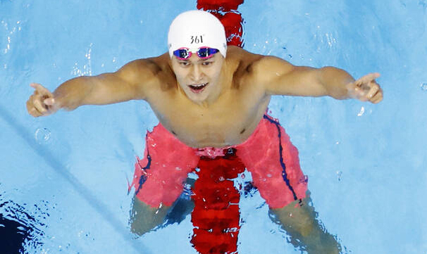

凤凰体育讯 北京时间8月9日上午，2016年里约奥运会游泳赛场结束男子200米自由泳决赛的争夺，孙杨游出1分44秒65的成绩夺得冠军！这是孙杨首次在世界大赛200米问鼎，南非选手勒克洛斯第2，美国选手戴尔第3。这是孙杨获得的第三枚奥运金牌。
夺冠之后，孙杨没有激动到哭泣，而是连续发生三声怒吼，他要将所有怒火发泄出去，随后双手比出第一的手势，霸气指天。泳坛一哥不容置疑。
据此前报道，在孙杨参加过的所有比赛里，他一共哭了14次。有人说孙杨没有男子汉气概，但他们不知道孙杨承受了多大的压力，此次夺冠后孙杨霸气的宣泄着怒火，这次是泳坛一哥霸气所在。
